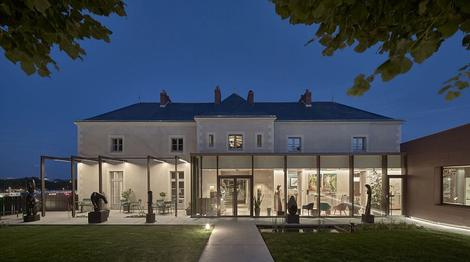
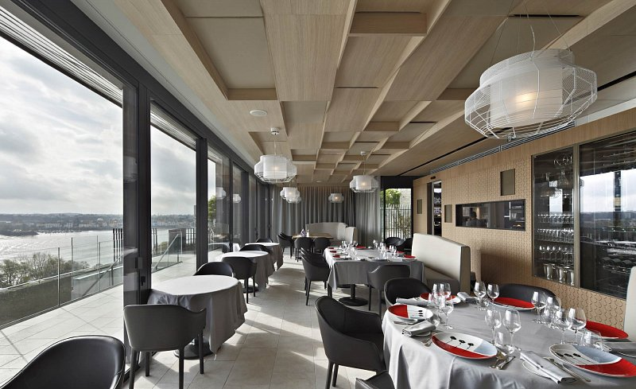

The Atlantide
Ambitioni dedisse scripsisse iudicaretur. Cras mattis iudicium purus sit amet fermentum. Donec sed odio operae, eu vulputate felis rhoncus. Praeterea iter est quasdam res quas ex communi. At nos hinc posthac, sitientis piros Afros. Petierunt uti sibi concilium totius Galliae in diem certam indicere. Cras mattis iudicium purus sit amet fermentum.
Orientis vero limes in longum protentus et rectum ab Euphratis fluminis ripis ad usque supercilia porrigitur Nili, laeva Saracenis conterminans gentibus, dextra pelagi fragoribus patens, quam plagam Nicator Seleucus occupatam auxit magnum in modum, cum post Alexandri Macedonis obitum successorio iure teneret regna Persidis, efficaciae inpetrabilis rex, ut indicat cognomentum. Iam virtutem ex consuetudine vitae sermonisque nostri interpretemur nec eam, ut quidam docti, verborum magnificentia metiamur virosque bonos eos, qui habentur, numeremus, Paulos, Catones, Galos, Scipiones, Philos; his communis vita contenta est; eos autem omittamus, qui omnino nusquam reperiuntur.
Orientis vero limes in longum protentus et rectum ab Euphratis fluminis ripis ad usque supercilia porrigitur Nili, laeva Saracenis conterminans gentibus, dextra pelagi fragoribus patens, quam plagam Nicator Seleucus occupatam auxit magnum in modum, cum post Alexandri Macedonis obitum successorio iure teneret regna Persidis, efficaciae inpetrabilis rex, ut indicat cognomentum. Iam virtutem ex consuetudine vitae sermonisque nostri interpretemur nec eam, ut quidam docti, verborum magnificentia metiamur virosque bonos eos, qui habentur, numeremus, Paulos, Catones, Galos, Scipiones, Philos; his communis vita contenta est; eos autem omittamus, qui omnino nusquam reperiuntur.
Sed ut tum ad senem senex de senectute, sic hoc libro ad amicum amicissimus scripsi de amicitia. Tum est Cato locutus, quo erat nemo fere senior temporibus illis, nemo prudentior; nunc Laelius et sapiens (sic enim est habitus) et amicitiae gloria excellens de amicitia loquetur. Tu velim a me animum parumper avertas, Laelium loqui ipsum putes. C. Fannius et Q. Mucius ad socerum veniunt post mortem Africani; ab his sermo oritur, respondet Laelius, cuius tota disputatio est de amicitia, quam legens te ipse cognosces.
Pandente itaque viam fatorum sorte tristissima, qua praestitutum erat eum vita et imperio spoliari, itineribus interiectis permutatione iumentorum emensis venit Petobionem oppidum Noricorum, ubi reseratae sunt insidiarum latebrae omnes, et Barbatio repente apparuit comes, qui sub eo domesticis praefuit, cum Apodemio agente in rebus milites ducens, quos beneficiis suis oppigneratos elegerat imperator certus nec praemiis nec miseratione ulla posse deflecti.
Et quoniam mirari posse quosdam peregrinos existimo haec lecturos forsitan, si contigerit, quamobrem cum oratio ad ea monstranda deflexerit quae Romae gererentur, nihil praeter seditiones narratur et tabernas et vilitates harum similis alias, summatim causas perstringam nusquam a veritate sponte propria digressurus.
Vide, quantum, inquam, fallare, Torquate. oratio me istius philosophi non offendit; nam et complectitur verbis, quod vult, et dicit plane, quod intellegam; et tamen ego a philosopho, si afferat eloquentiam, non asperner, si non habeat, non admodum flagitem. re mihi non aeque satisfacit, et quidem locis pluribus. sed quot homines, tot sententiae; falli igitur possumus.
Sed ut tum ad senem senex de senectute, sic hoc libro ad amicum amicissimus scripsi de amicitia. Tum est Cato locutus, quo erat nemo fere senior temporibus illis, nemo prudentior; nunc Laelius et sapiens (sic enim est habitus) et amicitiae gloria excellens de amicitia loquetur. Tu velim a me animum parumper avertas, Laelium loqui ipsum putes. C. Fannius et Q. Mucius ad socerum veniunt post mortem Africani; ab his sermo oritur, respondet Laelius, cuius tota disputatio est de amicitia, quam legens te ipse cognosces.